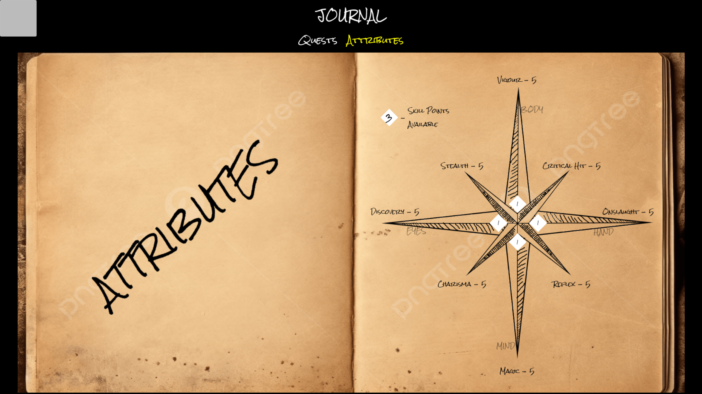
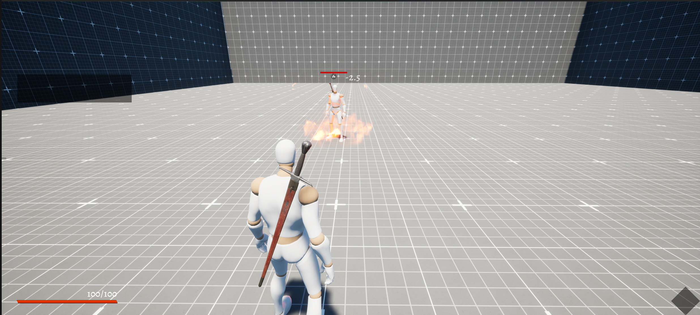
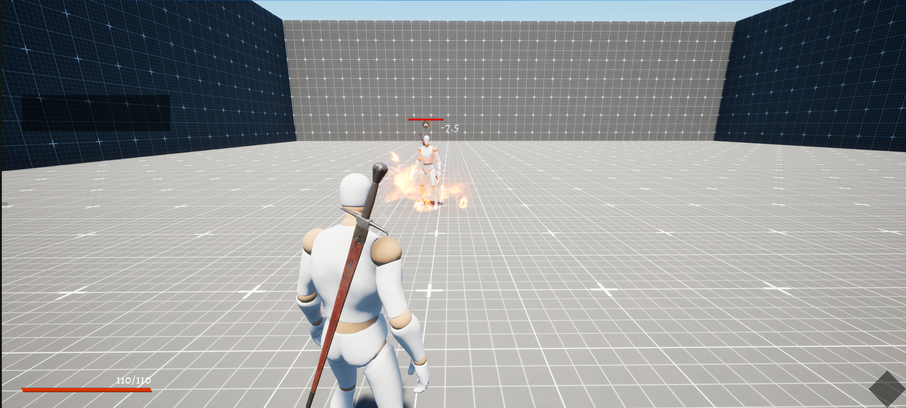

PROJECT WHIMSICAL'S: Player Attribute System
⚙️ HOW THE ATTRIBUTE SYSTEM WORKS
The Player Attribute System uses 4 Direct Attributes that players invest points into.
Each point invested creates a ripple effect, increasing multiple derived stats simultaneously. This creates an interconnected web where building one attribute naturally strengthens multiple playstyles.
Each point invested creates a ripple effect, increasing multiple derived stats simultaneously. This creates an interconnected web where building one attribute naturally strengthens multiple playstyles.
Core Mechanics (Subject To Change)
Points Per Level: 1 attribute point earned per level
Respec: Using a potions that is very pricey
Attribute Diversity: 8 Indirect attributes provide multiple playstyle options
Respec: Using a potions that is very pricey
Attribute Diversity: 8 Indirect attributes provide multiple playstyle options

📊 Character Stat Screen
How players allocate points and see their attribute progression
The Journal Visual
The Attributes menus is a sub-menu of Journal menu.
Each sub-menu of the journal appears to be in style of a journal page.
The attributes skill is deliberately designed in the style of a compass where each playstyle is in a direction.
The Cardinal Directions are directly derived from the skill point while the Ordinal Directions are derived from their Cardinal parents. This creates a visual representation of how the attributes are interconnected.
The Cardinal Directions are directly derived from the skill point while the Ordinal Directions are derived from their Cardinal parents. This creates a visual representation of how the attributes are interconnected.
⚔ THE 4 DIRECT ATTRIBUTES ⚔
Each Direct Attribute is designed to support a unique playstyle while interconnecting with others through derived stats:
BODY
Physical strength and resilience. Invest in BODY for survivability and melee combat effectiveness.
Grants Per Point:
+5 Vigour (Health)
+2.5 Stealth
+2.5 Critical Hit (Chance)
HAND
Dexterity and combat skill. Invest in HAND for damage, precision strikes, and quick reflexes.
Grants Per Point:
+5 Onslaught (Damage)
+2.5 Critical Hit
+2.5 Reflex (Speed)
MIND
Intelligence and magical prowess. Invest in MIND for spell power and dialogue influence.
Grants Per Point:
+5 Magic (Spell Potency)
+2.5 Reflex (Cooldown Reduction)
+2.5 Charisma
EYES
Perception and awareness. Invest in EYES for finding secrets and moving unseen.
Grants Per Point:
+5 Discovery (Finding Items)
+2.5 Charisma
+2.5 Stealth
The Interconnected Web
Notice how each attribute contributes to multiple derived stats. A player investing purely in BODY gets health, stealth, and critical hits. A player investing in HAND gets damage, critical hits, and speed. This overlap means no attribute is useless for any playstyle. A magic user (MIND) still benefits from Reflex (faster spell cooldowns), making the system feel organic rather than siloed.
📊 DERIVED STATS EXPLAINED
Each Direct Attribute increases multiple Derived Stats. Here's what each one does:
Vigour
Source: BODY (+5 per point)
Effect: +1 Health per Vigour point
Impact: Determines how much damage you can take before death. Core survivability stat.
Effect: +1 Health per Vigour point
Impact: Determines how much damage you can take before death. Core survivability stat.

Observe that the Health is 100/100 (Default)

Observe that the Health is 130/130 (2 Points Invested)
Critical Hit
Source: BODY (+2.5) + HAND (+2.5)
Effect: Increases chance to land critical strikes on every hit
Impact: Rewards precise timing and combat skill. Scales with both physical attributes.
Effect: Increases chance to land critical strikes on every hit
Impact: Rewards precise timing and combat skill. Scales with both physical attributes.

Critical Hit occurs on 10th Hit (Default)

Critical Hit occurs on 6th Hit (4 Points in Body)
Onslaught
Source: HAND (+5 per point)
Effect: Increases damage output per attack
Impact: Direct combat power. Essential for aggressive builds. Also enables breaking barriers (like barn doors).
Effect: Increases damage output per attack
Impact: Direct combat power. Essential for aggressive builds. Also enables breaking barriers (like barn doors).

Regular Damage: 5 and Heavy Damage: 10 (Default)

Regular Damage: 15 and Heavy Damage: 30 (2 Points in Hand)
Reflex
Source: HAND (+) + MIND (+2.5)
Effect: Decreases spell cooldown and increases movement speed
Impact: Allows quicker attacks, faster spell casting, and more fluid combat. Bridges physical and magical playstyles.
Effect: Decreases spell cooldown and increases movement speed
Impact: Allows quicker attacks, faster spell casting, and more fluid combat. Bridges physical and magical playstyles.

Observe the Lower Right Corner for magic timer (Default)

Observe the Lower Right Corner for magic timer (2 Points in Hand)
Magic
Source: MIND (+5 per point)
Effect: Increases spell potency (e.g., fire damage, heal strength)
Impact: Core magical stat. More Magic = more powerful spells and effects. Scales all spell-based abilities.
Effect: Increases spell potency (e.g., fire damage, heal strength)
Impact: Core magical stat. More Magic = more powerful spells and effects. Scales all spell-based abilities.

Notice that default fire magic damage on enemies is 2.5

Notice that fire magic damage on enemies is 7.5 after investing 2 points in Mind
Charisma
Source: MIND (+2.5) + EYES (+2.5)
Effect: Unlocks dialogue options with NPCs. Future expansion: affects traders and bartering.
Impact: Currently gates narrative content. Used in A Foul Call to charm Foy. Planned for NPC interactions.
Effect: Unlocks dialogue options with NPCs. Future expansion: affects traders and bartering.
Impact: Currently gates narrative content. Used in A Foul Call to charm Foy. Planned for NPC interactions.
Discovery
Source: EYES (+5 per point)
Effect: Increases chance of finding hidden items and secrets in the world
Impact: Enables exploration-focused gameplay. Finding clues in A Foul Call requires Discovery. Rewards curiosity.
Effect: Increases chance of finding hidden items and secrets in the world
Impact: Enables exploration-focused gameplay. Finding clues in A Foul Call requires Discovery. Rewards curiosity.

👁️ EYES Attribute in Action
Finding hidden items, discovering secrets, and sneaking unseen
Stealth
Source: BODY (+2.5) + EYES (+2.5)
Effect: Decreases detection radius by enemies, reduces sound made while moving
Impact: Enables stealth kills and avoiding combat. Can kill bosses unseen. Core for sneaky playstyles.
Effect: Decreases detection radius by enemies, reduces sound made while moving
Impact: Enables stealth kills and avoiding combat. Can kill bosses unseen. Core for sneaky playstyles.
📈 PROGRESSION SYSTEM
Players earn 1 attribute point per level.
These points are allocated freely to any of the 4 Direct Attributes. The plan is to allow respec of the level using a costly potion.
Level Progression Example
Level 1: 1 point earned → Player allocates to BODY and increase Health, Stealth and Critical Hit
Level 5: 5 total points earned → Player allocates to BODY + HAND to create a Warrior Build.
Level 10: 10 total points earned → Player allocates to BODY + HAND + MIND to create a Magical Warrior Build.
Level 25: Player has RESPEC POTION → Player drinks it and gets back all 25 points and allocates to MIND + EYES to create a Charismatic Magician Build.
Level 5: 5 total points earned → Player allocates to BODY + HAND to create a Warrior Build.
Level 10: 10 total points earned → Player allocates to BODY + HAND + MIND to create a Magical Warrior Build.
Level 25: Player has RESPEC POTION → Player drinks it and gets back all 25 points and allocates to MIND + EYES to create a Charismatic Magician Build.
⚔ GATING CONTENT WITH ATTRIBUTES ⚔
Attributes aren't just for combat stats—they gate access to quest content and story moments. Different playstyles unlock different experiences.
Discovery >= 3: Follow Magic Vines
Quest: A Foul Call
Requirements: EYES attribute level 3+
Action Unlocked: Find magical vines leading to Clare's house in the garden
Playstyle Impact: Investigative players naturally invest in EYES for discovery, unlocking this path without forcing it.
Requirements: EYES attribute level 3+
Action Unlocked: Find magical vines leading to Clare's house in the garden
Playstyle Impact: Investigative players naturally invest in EYES for discovery, unlocking this path without forcing it.
Charisma >= 4: Charm Foy
Quest: A Foul Call
Requirements: MIND >= 2 + EYES >= 2 (or higher)
Action Unlocked: Persuade Foy (garden helper) to reveal Clare's location
Playstyle Impact: Diplomatic/observant players get unique dialogue options. Fast-tracks investigation.
Requirements: MIND >= 2 + EYES >= 2 (or higher)
Action Unlocked: Persuade Foy (garden helper) to reveal Clare's location
Playstyle Impact: Diplomatic/observant players get unique dialogue options. Fast-tracks investigation.
Onslaught >= 5: Break Barn Door
Quest: A Foul Call
Requirements: HAND attribute level 5+
Action Unlocked: Forcefully break down the barn door, skipping investigation
Playstyle Impact: Combat-focused players can brute-force their way in. Fastest path to spirit.
Requirements: HAND attribute level 5+
Action Unlocked: Forcefully break down the barn door, skipping investigation
Playstyle Impact: Combat-focused players can brute-force their way in. Fastest path to spirit.
Stealth >= 5: Stealth Kill Spirit
Quest: A Foul Call (Boss Fight)
Requirements: BODY >= 3 + EYES >= 2 (or equivalent Stealth)
Action Unlocked: Kill pumpkin spirit unseen without triggering combat
Playstyle Impact: Stealth players bypass combat entirely. No witnesses = best moral outcome possible.
Requirements: BODY >= 3 + EYES >= 2 (or equivalent Stealth)
Action Unlocked: Kill pumpkin spirit unseen without triggering combat
Playstyle Impact: Stealth players bypass combat entirely. No witnesses = best moral outcome possible.
Why This Design Matters
By tying attribute requirements to quest content, the system ensures every playstyle feels valid and rewarded. A player who invested in Onslaught gets a unique path. A player who invested in Discovery gets a different path. Neither feels "wrong"—both are legitimate strategies that the game acknowledges through special content.
🎯 SYNERGIES & PLAYSTYLE BUILDS
The interconnected nature of the attribute system creates natural synergies. Certain attribute combinations amplify each other and enable unique playstyles.
⚔ ATTRIBUTE SYNERGIES ⚔
💪 BODY + HAND = Combat Warrior
Why They Work Together: BODY grants health and stealth, HAND grants damage and reflex. Combined = a durable, quick attacker.
Derived Benefits: Massive health pool, high damage, fast reflexes, critical hit scaling
Gameplay: Engage in direct combat, outlast enemies through damage and durability.
Derived Benefits: Massive health pool, high damage, fast reflexes, critical hit scaling
Gameplay: Engage in direct combat, outlast enemies through damage and durability.
🧠 MIND + EYES = Perceptive Mage
Why They Work Together: MIND grants magic and reflex, EYES grants discovery and stealth. Combined = a smart spellcaster who finds secrets.
Derived Benefits: Strong spells, fast cooldowns, hidden item detection, undetectable sneaking
Gameplay: Cast powerful spells from stealth, explore thoroughly, discover hidden paths.
Derived Benefits: Strong spells, fast cooldowns, hidden item detection, undetectable sneaking
Gameplay: Cast powerful spells from stealth, explore thoroughly, discover hidden paths.
👁️ BODY + EYES = Sneaky Scout
Why They Work Together: BODY grants stealth and health, EYES grants discovery and charisma. Combined = a ghost who finds everything.
Derived Benefits: Invisible to enemies, detect all secrets, talk your way out, quick escapes
Gameplay: Sneak through areas undetected, find every secret, charm NPCs when caught.
Derived Benefits: Invisible to enemies, detect all secrets, talk your way out, quick escapes
Gameplay: Sneak through areas undetected, find every secret, charm NPCs when caught.
✋ HAND + MIND = Quick Spellblade
Why They Work Together: HAND grants damage and reflex, MIND grants magic and reflex. Combined = fast physical AND magical attacks.
Derived Benefits: High onslaught, high magic, very fast reflexes, quick spell cooldowns
Gameplay: Blend melee and magic for fluid, rapid combat. Cast while attacking.
Derived Benefits: High onslaught, high magic, very fast reflexes, quick spell cooldowns
Gameplay: Blend melee and magic for fluid, rapid combat. Cast while attacking.
⚔ EXAMPLE BUILDS ⚔
🗡️ The Warrior
Direct Combat Focus
A player who invests heavily in BODY and HAND for maximum survivability and damage output. Engages bosses head-on and wins through superior stats.
Recommended Allocation (50 points):
BODY: 20 points | HAND: 25 points | MIND: 3 points | EYES: 2 points
Key Stats:
Vigour: 100+ | Onslaught: 125+ | Critical Hit: Very High
A Foul Call Strategy:
Use Onslaught >= 5 to break barn door directly. Fight spirit with pure strength. Brute force through challenges.

🗡️ Warrior Build in Combat
High health and damage output overwhelming enemies
🎭 The Diplomat
Dialogue & Perception
A player who invests in MIND and EYES for charm and perception. Solves problems through dialogue, discovery, and understanding rather than combat.
Recommended Allocation (50 points):
BODY: 5 points | HAND: 5 points | MIND: 20 points | EYES: 20 points
Key Stats:
Charisma: 100+ | Discovery: 100+ | Magic: 100+
A Foul Call Strategy:
Use Discovery >= 3 to follow vines. Use Charisma >= 4 to charm Foy. Gather all information. Make informed moral choices.

🎭 Diplomat Build in Action
Unlocking unique dialogue options and discovering hidden information
🥷 The Shadow
Stealth & Evasion
A player who invests in BODY and EYES for stealth and perception. Avoids conflict entirely, sneaks past enemies, and solves problems without being seen.
Recommended Allocation (50 points):
BODY: 18 points | HAND: 8 points | MIND: 8 points | EYES: 16 points
Key Stats:
Stealth: 85+ | Discovery: 80+ | Vigour: 90+
A Foul Call Strategy:
Reach barn unseen. Kill spirit with Stealth >= 5 without triggering combat. Complete quest with zero witnesses.

🥷 Shadow Build in Action
Sneaking past enemies and executing stealth kills unseen
✨ The Mage
Magic & Spell Power
A player who invests heavily in MIND for spell potency and cooldown reduction. Relies on magical abilities to defeat enemies and overcome obstacles.
Recommended Allocation (50 points):
BODY: 8 points | HAND: 8 points | MIND: 28 points | EYES: 6 points
Key Stats:
Magic: 140+ | Reflex: 68+ | Vigour: 40+
A Foul Call Strategy:
Use magic to defeat spirit. Fast spell cooldowns mean more casts per fight. Magic-based crowd control if available.

✨ Mage Build in Action
Casting powerful spells with rapid cooldown reduction in combat
Hybrid Builds Are Valid Too
The beauty of this system is that players aren't forced into rigid archetypes. A player could allocate 12 points to each attribute and create a well-rounded "Jack of All Trades" character. Or invest 15 in BODY, 15 in HAND, and 20 in EYES for a "Combat Scout." The system is flexible enough to support any reasonable allocation while still rewarding specialization through higher derived stat numbers.